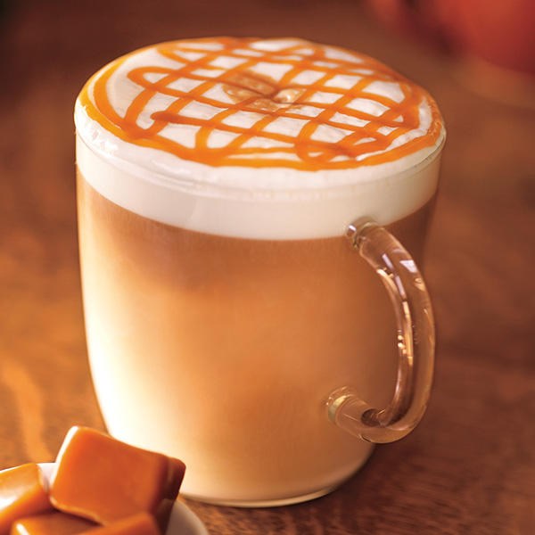

微積分飲料店---菜單
義式經典巧克力咖啡
Signature Chocolate Latte
將經典摩卡醬、經典巧克力醬與經典濃縮結合，倒入蒸製好的香醇牛奶
完美結合出甜蜜宜人最對味的巧克力&咖啡。
配上夥伴用心拉花而成的愛心，在暖冬時節為我們的顧客獻上暖暖的祝福。
馥列白
Flat White
此款咖啡源自與亞洲相鄰，精品咖啡文化紮實的澳洲。
在濃縮咖啡與牛奶的比例上，使用stretto shots增加咖啡濃醇度
由漂亮的圓點結束，完成一杯風味較濃郁且平衡的牛奶咖啡。
卡布奇諾
Cappuccino

融合濃縮咖啡及現蒸牛奶，加上豐厚細緻的奶泡，呈現醇厚咖啡風味。
那堤
Caffé Latte
濃郁醇厚的濃縮咖啡，搭配新鮮蒸煮的優質鮮奶，覆上綿密細緻的奶泡。
焦糖瑪奇朵
Caramel Macchiato

融合新鮮蒸奶及香草風味糖漿後，倒入濃縮咖啡並在奶泡上覆以香甜焦糖醬
呈現多層次風味，是星巴克深受歡迎的飲料。
摩卡
Caffé Mocha

由濃縮咖啡、摩卡醬及新鮮蒸奶調製，覆上輕盈柔細的鮮奶油
帶來香濃的巧克力及咖啡風味。